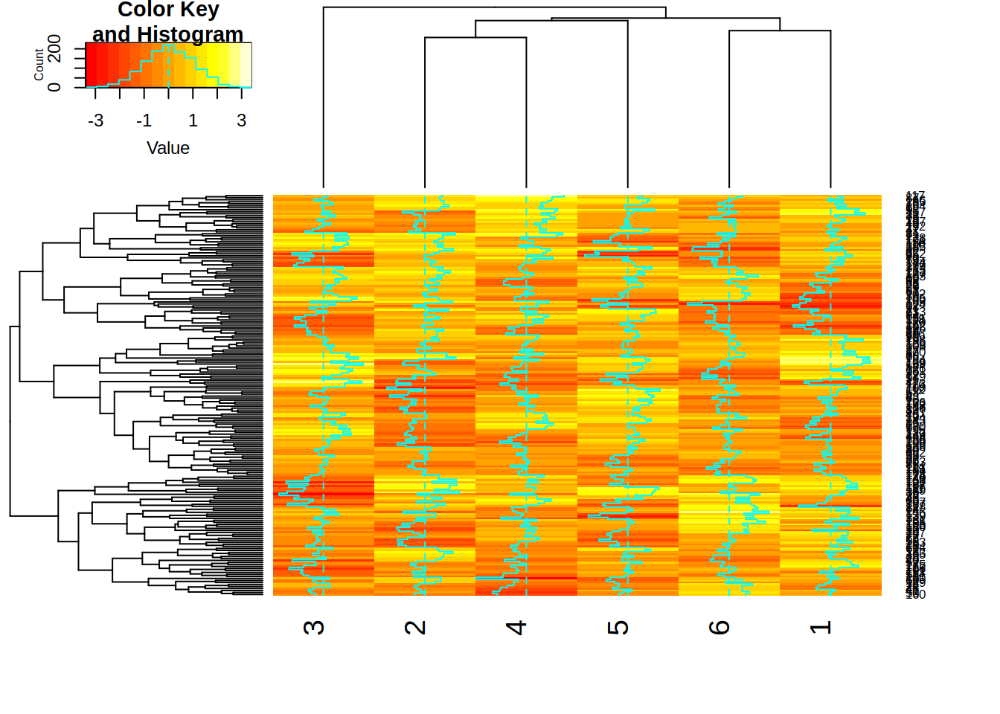
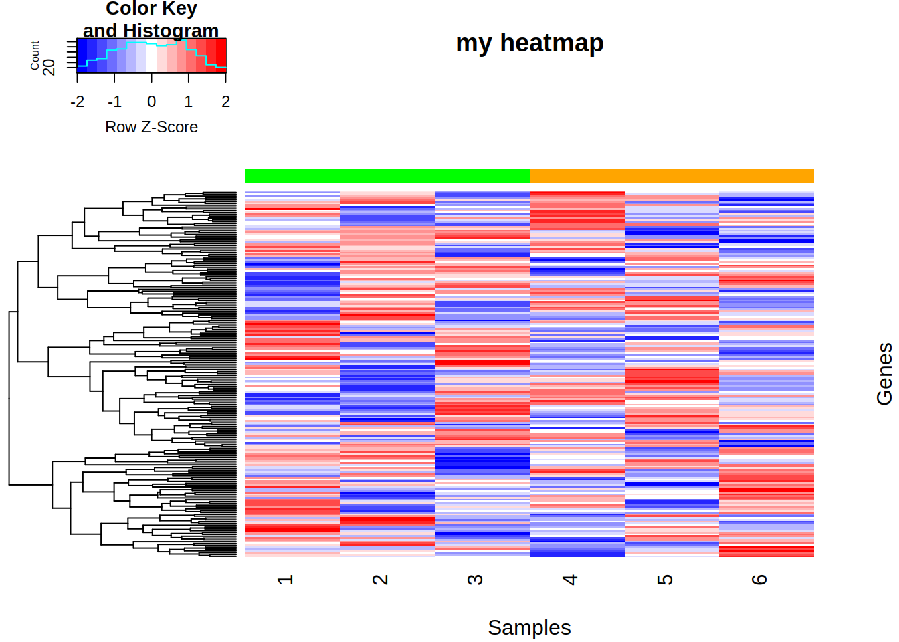

Part18 Plots from other packages
We will see two additional types of plots:
- Heat map (package gplots)
- Venn diagram (from package VennDiagram)
18.1 heatmap.2 function from gplots package
A heatmap is a graphical representation of data where the values are represented with colors.
The heatmap.2 function from the gplots package allows to produce highly customizable heatmaps.
# load package
library("gplots")
# make matrix
mat <- matrix(rnorm(1200), ncol=6)
# heatmap with the defaults parameters
heatmap.2(x=mat)
- Useful arguments include:
- Rowv, Colv : process clustering of columns or rows (default TRUE to both)
- dendrogram : show dendrogram for row, col, both or none
- scale : scale data per row, column, or none
- col : dendrogram color palette
- trace : control the cyan density lines
- RowSideColors, ColSideColors : block of colors that represent the columns or the rows
- labRow,labCol : remove or keep row or col labels
- main : title
- xlab, ylab: x-axis or y-axis label
heatmap.2(x=mat,
Colv=FALSE,
dendrogram="row",
scale="row",
col="bluered",
trace="none",
ColSideColors=rep(c("green","orange"), each=3),
labRow=FALSE,
main="my heatmap",
ylab="Genes",
xlab="Samples")
18.2 venn.diagram function from VennDiagram package
A Venn diagram shows all possible logical relations between data sets.
The venn.diagram function from the VennDiagram package allows to create up to a 5-way Venn Diagram (i.e. 5 circles representing 5 data sets).
# load package
library(VennDiagram)
# Prepare character vectors
v1 <- c("DKK1", "NPC1", "NAPG", "ERG", "VHL", "BTD", "MALL", "HAUS1")
v2 <- c("SMAD4", "DKK1", "ASXL3", "ERG", "CKLF", "TIAM1", "VHL", "BTD", "EMP1", "MALL", "PAX3")
v3 <- c("PAX3", "SMAD4", "DKK1", "MALL", "ERG", "CDKN2A", "DENR", "NPC1", "NAPG")
# Create a list of vectors
vlist <- list(v1, v2, v3)
names(vlist) <- c("list1", "list2", "list3")
# 2-way Venn
venn.diagram(vlist[1:2],
filename="Venn_2way.png",
imagetype="png")## [1] 1## [1] 1
- More arguments:
- main : title
- sub : sub-title
- main.col : color of title font
- fill : color of circles
- col : color of circle lines
- cat.col : color of category labels
venn.diagram(vlist,
filename="Venn_3way_more.png",
imagetype="png",
main="Venn diagram",
sub="3-way",
main.col="red",
fill=c("lightgreen", "lightblue", "lightsalmon"),
col=c("lightgreen", "lightblue", "lightsalmon"),
cat.col=c("green", "blue", "salmon"))## [1] 1